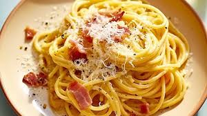

Spaghetti Carbonara

Ingredients
For the Pasta:
- 8 oz (225 g) of pasta (penne, fusilli, or your choice)
- Salt (for boiling water)
For the Grilled Vegetables:
- 1 medium zucchini, sliced
- 1 bell pepper (red, yellow, or green), sliced
- 1 cup cherry tomatoes
- 1 red onion, cut into wedges
- 2 tablespoons olive oil
- Salt and pepper, to taste
- 1 teaspoon Italian seasoning (optional)
For the Sauce:
- 1 cup marinara sauce or your favorite pasta sauce
- 1/4 cup grated Parmesan cheese
- Fresh basil leaves, for garnish
Optional Protein:
- Grilled chicken, shrimp, or sausage (cooked separately)
Instructions
-
Cook the Pasta:
- Bring a large pot of salted water to a boil.
- Add the pasta and cook according to package instructions until al dente.
- Drain and set aside.
-
Prepare the Vegetables:
- Preheat your grill to medium-high heat.
- In a bowl, toss the sliced zucchini, bell pepper, cherry tomatoes, and red onion with olive oil, salt, pepper, and Italian seasoning.
- Place the vegetables on the grill and cook for about 5-7 minutes, turning occasionally, until they are tender and have nice grill marks.
-
Combine the Pasta and Vegetables:
- In a large mixing bowl, combine the cooked pasta and grilled vegetables.
- Add the marinara sauce and mix well until everything is evenly coated.
- If you’re using protein, add it at this stage and mix.
-
Serve:
- Divide the pasta onto plates or bowls.
- Sprinkle with grated Parmesan cheese and garnish with fresh basil leaves.
- Serve warm and enjoy!
Tips:
- Feel free to add other vegetables like asparagus, mushrooms, or eggplant based on your preference.
- For added flavor, marinate the vegetables in balsamic vinegar before grilling.
- This dish can also be served cold as a pasta salad.
Enjoy Your Grilled Italian Pasta!
This recipe is perfect for a summer cookout or a quick weeknight dinner. Adjust the ingredients based on your taste, and have fun grilling!
Back to Recipes